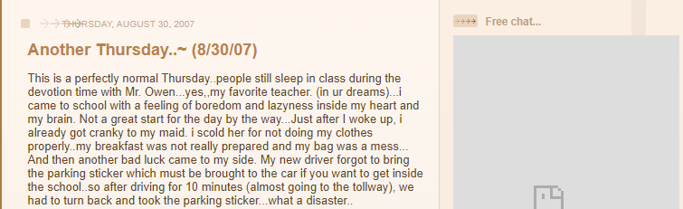
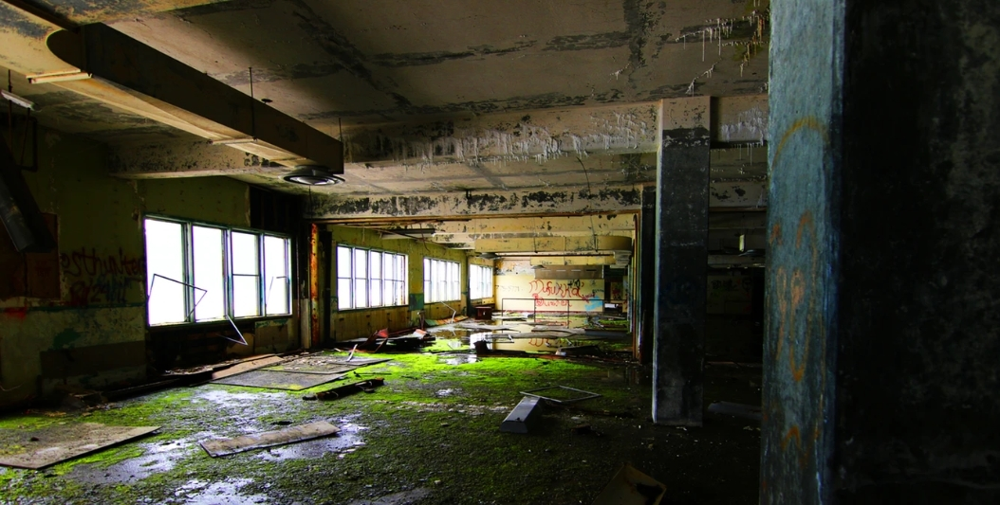
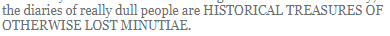
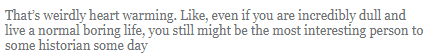

the abandoned buildings of the web.
The internet is a wasteland (more on that
later). this has its ups and downs, but it does provide a landscape
with unrivaled potential for exploration and discovery. one of the
things I love about searching the internet is finding old blogs.
livejournal, blogspot, you name it. I don't even care how boring the
blog seems, I just love reading it. it gives me a powerful window
into the past of a certain person, or even a group of people. often
a single person will write about their entire friend group, or
something like that, and I can gain an idea of what their lives were
like at the time. this is what I'm talking about when I mention
digital archaeology.
When you find one of these blogs, if you can find the person who created it and understand their current internet presence, you can form a painting of sorts. a painting of that person as they exist right now. and then, you can look back at that old blog, and see something that's like a slice of that person's life. if a person's life is a painting, then that old blog is like a work in progress.
to me, that's incredibly special. think of it this way: when a work of art is completed, the work in progress no longer exists in any meaningful, tangible way. but because this work of art was able to document itself at multiple points in time, I now understand the work that much better. I can see what things they used to do, what type of person they are, and how they evolved over time.
it's a pretty incredible phenomenon on the internet, in fact — there are all these places that exist as 'abandoned buildings', as it were. you know how sometimes you'll see pictures of places that were hastily abandoned for whatever reason? you often see a bunch of stuff that wouldn't usually be abandoned, or the state of the room otherwise looks as if people could have lived in it not a day before. that's what it's like for me to find a defunct personal website these days. you can read that person's thoughts, see what they were up to, understand what their life was like — and then you look at the most recent post and it's like 'this post was made january fifth, two thousand six' or something. that place rests entirely in suspended animation, complete with an earlier version of it's owner, almost like a ghost haunting an old building — but the human is still alive and has moved on.
a lot of searching the internet is like being an archeologist. you find things that no one has seen in many, many years and you can try to determing what it is that you've found, or who this person is in this image you have, or what this webpage was for before it was abandoned. no matter how uninteresting the blog, it always holds some treasure — just like traditional archeologists and historians know:
 
preservation of history is paramount in a place where everything
changes so rapidly, which is why archiving things like blogs is so
interesting to me. it's one of the reasons I write this blog. I
think it's nice to have these things that will serve as time
capsules for people in the future. and I'll keep gathering
information from blogs and any other sites that came before my time
until I no longer can — each one is special.
Thanks for reading! I'll be back soon with something else. I'm about to start a new job with an amazing company, but that's not for a month or so. in the mean time, I'm working on a digital collection application for archivists, researchers, and information addicts like me. it's still in the planning stage but I'm very very excited about it! when finished, it will be the second useful piece of software I have made. I plan on posting about it when I make some progress on the interface.
now, listen to this:
currently listening to:
- spiral summoner by yorukou from storyteller volume 2 - this artist is seventeen years old. hello??
- pressure by muse from simulation theory
- you can't explain anything without the word 'destruction' / destruction by foreground eclipse from each and every word leaves me here alone
- holy mother by starbenders (single) - it's catchy, okay?
- sunshine coastline by Takahiro Unisuga / Falcom Sound Team jdk from Ys VIII -Lacrimosa of DANA- Original Soundtrack - I listen to this every single day.
- time to go by dropkick murphys from blackout
-
favorite transgressions
by
sleigh bells
from
kid kruschev